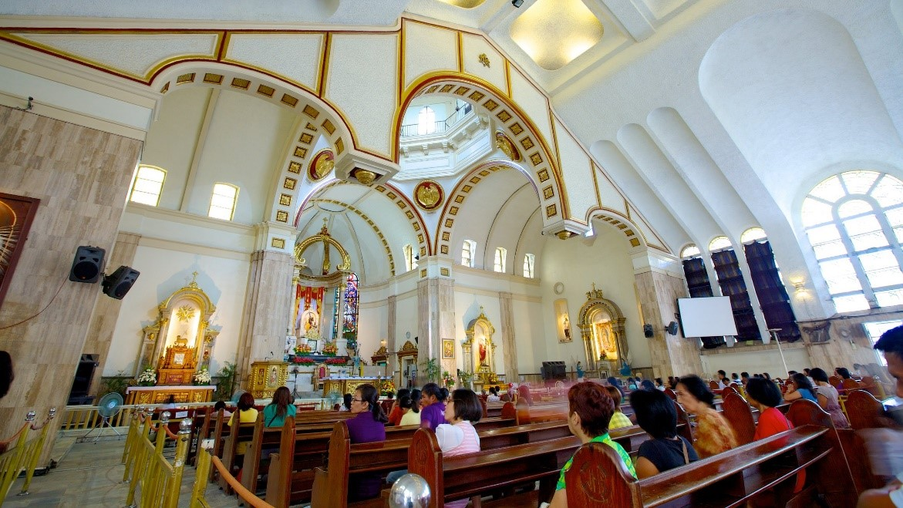

Quiapo Church is a 1933 replacement of an older structure destroyed by fire. One of Manila's best-known landmarks, Quiapo is the home of the Black Nazarene, an image of Christ believed to be miraculous. The life-size statue, carved from ebony, was first brought to Quiapo in 1767.
Quiapo Church, also known as the Minor Basilica of the Black Nazarene, is one of the most famous churches in the Philippines and a popular destination for pilgrims and tourists. Here are some of the things that make Quiapo Church special:
Religious Significance: Quiapo Church is home to the Black Nazarene, a dark-skinned statue of Jesus Christ that is believed to have miraculous powers. The statue is revered by Catholics in the Philippines and is the centerpiece of the church's annual procession, which attracts millions of devotees each year.
Cultural Heritage: Quiapo Church is an important cultural heritage site in the Philippines. It has played a significant role in the country's history and culture, and it is a symbol of the country's deep Catholic faith.
Architectural Beauty: The church features beautiful baroque and neo-gothic architecture, with intricate carvings, stained glass windows, and towering spires. The interior of the church is adorned with ornate decorations and artwork.
Location: Quiapo Church is located in the heart of Manila's bustling Quiapo district, making it a great place to explore the surrounding area and experience the vibrant street life of Manila.
Community: Quiapo Church is not just a place of worship but also a community center that provides support and assistance to the surrounding community. The church runs several programs, including a feeding program for the homeless and a free clinic.
Overall, Quiapo Church is a special place that offers visitors a unique look into the Philippines' religious and cultural heritage. Its religious significance, cultural heritage, architectural beauty, location, and community involvement make it a must-visit destination for anyone traveling to Manila.